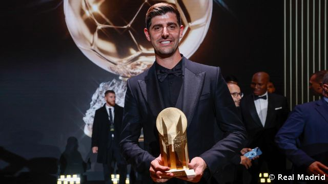
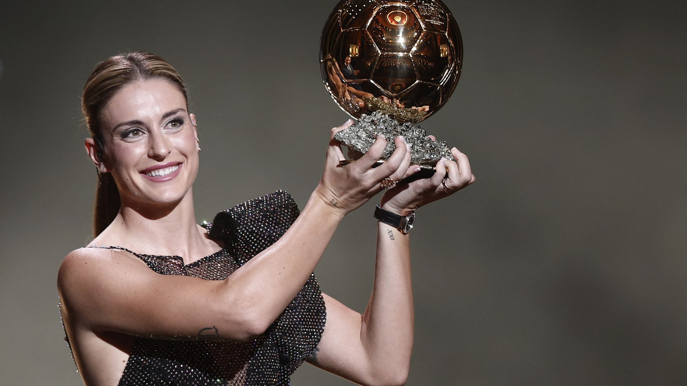

El pasado lunes 17 de octubre Karin Benzema jugador del Real Madrid se inpondria a sus rivales y ganaria su primer balon de oro a la edad de 34 años tras hacer una gran temporada pasada siendo el pichichi de la liga y maximo goleador de la champions league ademas de ganar liga y champions con el Real Madrid
El delantero frances fue clave para ganar el titulo de la champions la pasada temporada marcando hattrick en dos partidos seguidos uno contra el psg y otro con el chelsea
El pasado lunes 17 de octubre Thibaut Courtois jugador del Real Madrid se inpondria a sus rivales y ganaria el premio al mejor portero del año a la edad de 30 años tras hacer una gran temporada pasada siendo clave en la victoria de la pasada champions del Real Madrid
Curtuois ganador del premio yashin
El pasado lunes 17 de octubre Alexia putellas jugadora del futbol club Barcelona y de la seleccion española femenina se inpondria a sus rivales y ganaria el premio a la mejor jugadora del año por segunda vez en su carrera de manera conssecutiva a la edad de 28 años tras hacer una gran temporada pasada
Alexia ganadora del balon de oro